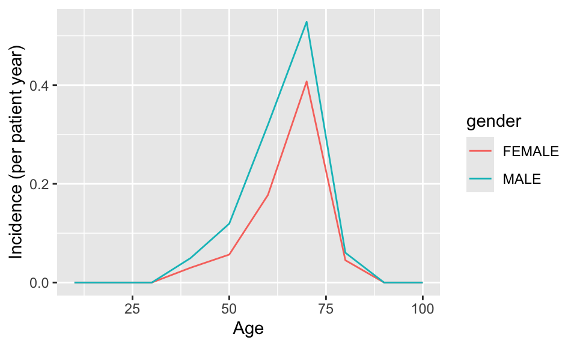

install.packages("DatabaseConnector") # Available on CRANStructured query language
Biostat 218
Marc A Suchard @ UCLA
Introduction
In this lecture we will learn how to:
Think about structured queries in databases
Support many different management systems
Handle different dialects
Write simple queries against the OMOP CDM
SQL purpose
Domain-specific language (DSL) for relational database management systems (RDBMS)
Specialized to handle structured data that follows a relational model
Used to interact with RDBMS: create (query), modify, delete data (also manage access)
- Even under the
dplyr/dbplyrhood
- Even under the
SQL history
Introduced in the 1970s
Based on relational algebra (algebraic structures for modeling tuples of data), popularized by Edgar Codd (1970, Turing Award, IBM)
Developed by Donald Clamberlin and Raymond Boyce (IBM) and initially called SEQUEL (trademark issue)
First commercially available in 1979 from IBM
Also in 1979, Relational Software, Inc released Oracle V2 (targeted for US Navy, CIA)
ANSI / ISO “standards” \(\ldots\) but not!
Most widely used database language
SQL vs noSQL
SQL
Relational
Transactional
When in doubt: your best bet!
NoSQL
Value-keys, documents, wide-column (column-store), graphs
Distributed (arguably scalable)
Vector databases (noSQL)
Store / manage / search vector embeddings of unstructured data; very useful for retrieval augmented generation (RAG) with LLMs
SQL syntax
We will learn (mostly) by example. It is relatively easy, except for nested expressions (subqueries)
Important commands:
SELECT <columns> (4)
FROM <table / subquery> (1)
WHERE <predicate on rows> (2) opt
GROUP BY <columns> (3) opt
ORDER BY <columns> (5) optData query
language:
Data manipulation language:
INSERTUPDATEDELETE
Data definition language:
CREATEDROPTRUNCATE
Above is not a exhaustive list of commands
Connecting to various RDBMS
DatabaseConnector is an R package for connecting to various RDBMS using Java’s JDBC drivers (broad compatibility)
- SQL Server, Oracle, PostgreSQL, PDW, Snowflake, Spark, RedShift, Azure Synapse, BigQuery, Netezza, Impala, SQLite, DuckDB
Simple connection to our synthetic database
library(DatabaseConnector)
absoluteFileName <- file.path(getwd(), "data", "synthetic.duckdb")
connection <- connect(dbms = "duckdb", server = absoluteFileName)
sql <- "SELECT COUNT(*) AS subjects FROM person;"
querySql(connection = connection,
sql = sql) SUBJECTS
1 1e+06New SQL commands
*- match all columnsCOUNT()- total all rowsAS- rename resulting object
Via higher-level dplyr / dbplyr
For limited RDBMS (PostgreSQL, SQLite, DuckDB), we may use dplyr directly
- Rarely sufficient for production-scale deployment, maybe OK for research
library(dplyr)
connection <- connect(dbms = "duckdb", server = absoluteFileName)
person <- tbl(connection, "person") # table reference (not in-memory)
concept <- tbl(connection, "concept") # table reference
vocabulary <- tbl(connection, "vocabulary") # table reference
person %>% group_by(gender_concept_id) %>% # execute query
summarise(count = n())# Source: SQL [2 x 2]
# Database: DatabaseConnectorDbiConnection
gender_concept_id count
<dbl> <dbl>
1 8507 499621
2 8532 500379person %>% group_by(gender_concept_id) %>%
summarise(count = n()) %>%
show_query() # remember GROUP BY is higher priority than SELECT<SQL>
SELECT gender_concept_id, COUNT(*) AS count
FROM person
GROUP BY gender_concept_idperson %>% group_by(gender_concept_id) %>%
summarise(count = n()) %>%
inner_join(concept %>% select(concept_id, concept_name),
by=c("gender_concept_id" = "concept_id"))# Source: SQL [2 x 3]
# Database: DatabaseConnectorDbiConnection
gender_concept_id count concept_name
<dbl> <dbl> <chr>
1 8532 500379 FEMALE
2 8507 499621 MALE person %>% group_by(gender_concept_id) %>%
summarise(count = n()) %>%
inner_join(concept %>% select(concept_id, concept_name),
by=c("gender_concept_id" = "concept_id")) %>%
show_query() # note the subquery<SQL>
SELECT LHS.*, concept_name
FROM (
SELECT gender_concept_id, COUNT(*) AS count
FROM person
GROUP BY gender_concept_id
) LHS
INNER JOIN concept
ON (LHS.gender_concept_id = concept.concept_id)show_query() is often a good starting-point
\(\ldots\) a major short-coming of dplyr is its lack of cross-RDMS support
Handling SQL dialects
A simple example of SQL variation across RDBMS:
- Solution:
SqlRenderpackage can translate from one standard dialect (OHDSI SQL) to all other supported dialects \(\ldots\) write once; use many!- OHDSI SQL is mainly a subset of the SQL Server dialect
and
SQL parameterization
SqlRender also provides programmatic parameterization via a simple markup syntax (using the @ prefix for parameters) of
- SQL values
[1] "SELECT * FROM concept WHERE concept_id = 123;"- SQL tables and fields (not provided by most RDBMS)
[1] "SELECT * FROM observation WHERE person_id = 123;"Parameter values can numbers, strings, booleans and (conveniently) even vectors
[1] "SELECT * FROM concept WHERE concept_id IN (123,234,345);"New SQL commands
WHERE- optionalSELECTclause to limit rowsIN- is field value contained in list?
SQL translation
SqlRender in action:
sql <- "SELECT TOP 10 * FROM person;"
translate(sql, targetDialect = "postgresql") # specify the target dialect[1] "SELECT * FROM person LIMIT 10;"
attr(,"sqlDialect")
[1] "postgresql"SqlRender translates most SQL functions
| Function | Function | Function |
|---|---|---|
| ABS | EXP | RAND |
| ACOS | FLOOR | RANK |
| ASIN | GETDATE | RIGHT |
| ATAN | HASHBYTES* | ROUND |
| AVG | ISNULL | ROW_NUMBER |
| CAST | ISNUMERIC | RTRIM |
| CEILING | LEFT | SIN |
| CHARINDEX | LEN | SQRT |
| CONCAT | LOG | SQUARE |
| COS | LOG10 | STDEV |
| COUNT | LOWER | SUM |
| COUNT_BIG | LTRIM | TAN |
| DATEADD | MAX | UPPER |
| DATEDIFF | MIN | VAR |
| DATEFROMPARTS | MONTH | YEAR |
| DATETIMEFROMPARTS | NEWID | |
| DAY | PI | |
| EOMONTH | POWER |
* Requires special privileges on Oracle. Has no equivalent on SQLite
New or useful SQL commands
TOP- select only the first set of rowsDATEDIFF()- compute the difference btw two dates in # ofDAY,MONTHorYEARintervalsAVG()/MIN()/MAX()- should be obvious
Conditional SQL generation
To turn blocks of code on or off based on the parameter values, SqlRender adds a ternary operator:
{ Condition } ? { if true } : { if false }
Databases and schema
Different RDBMS handle collections of tables differently
Some enforce a single
databasewith multipleschemaOthers enforce multiple
databases each with a singleschema
Solution: concatenate database and schema into single parameter @databaseSchema
SQL Server -
databaseSchema = "cdm_data.dbo"PostgreSQL -
databaseSchema = "cdm_data"
Simple SQL function example
connection <- connect(dbms = "duckdb", server = absoluteFileName)
sql <- "
SELECT MAX(YEAR(observation_period_end_date) -
year_of_birth) AS max_age
FROM @cdm.person
INNER JOIN @cdm.observation_period
ON person.person_id = observation_period.person_id;
"
renderTranslateQuerySql(connection = connection, sql = sql,
cdm = "synthetic.main") MAX_AGE
1 111or
connection <- connect(dbms = "duckdb", server = absoluteFileName)
sql <- "
SELECT MAX(DATEDIFF(
YEAR, birth_datetime, observation_period_end_date)
) AS max_age
FROM @cdm.person
INNER JOIN @cdm.observation_period
ON person.person_id = observation_period.person_id;
"
renderTranslateQuerySql(connection = connection, sql = sql,
cdm = "synthetic.main") MAX_AGE
1 111SELECT MAX((EXTRACT(YEAR FROM CAST(observation_period_end_date AS DATE)) - EXTRACT(YEAR FROM CAST(birth_datetime AS DATE)))
) AS max_age
FROM @cdm.person
INNER JOIN @cdm.observation_period
ON person.person_id = observation_period.person_id;Incidence rate study
ACE inhibitors are the most popular treatment for essential hypertension. Hypertensive patients suffer from acute myocardial infarctions (AMI). What is rate of AMI in the first year following lisinopril treatment initiation, stratified by age and gender?
The hard way
Before OHDSI standardization, every analysis in every database was separately (and often poorly) hand-coded \(\ldots\) like we will do here
We need to define (and implement in SQL)
Exposure - first exposure to lisinopril with \(\ge\) 365 days of observation prior to first exposure. NB: overly simplified for clinical use
Outcome - any occurrence of an acute myocardial infarction diagnosis code during an inpatient or emergency room (ER) visit
Time-at-risk - compute the incidence rate of outcome in the first year after exposure
Create a COHORT table
conn <- connect(dbms = "duckdb", server = absoluteFileName)
cdmDbSchema <- "synthetic.main"
cohortDbSchema <- "synthetic.main" # often somewhere else
cohortTable <- "my_cohorts"
sql <- "
DROP TABLE IF EXISTS @cohort_db_schema.@cohort_table;
CREATE TABLE @cohort_db_schema.@cohort_table (
cohort_definition_id INT,
cohort_start_date DATE,
cohort_end_date DATE,
subject_id BIGINT
);
"
renderTranslateExecuteSql(conn, sql,
cohort_db_schema = cohortDbSchema,
cohort_table = cohortTable)Build exposure cohort
sql <- "
INSERT INTO @cohort_db_schema.@cohort_table (
cohort_definition_id,
cohort_start_date,
cohort_end_date,
subject_id
)
SELECT 1 AS cohort_definition_id,
cohort_start_date,
cohort_end_date,
subject_id
FROM (
SELECT drug_era_start_date AS cohort_start_date,
drug_era_end_date AS cohort_end_date,
person_id AS subject_id
FROM (
SELECT drug_era_start_date,
drug_era_end_date,
person_id,
ROW_NUMBER() OVER (
PARTITION BY person_id
ORDER BY drug_era_start_date
) order_nr
FROM @cdm_db_schema.drug_era
WHERE drug_concept_id = 1308216 -- Lisinopril
) ordered_exposures
WHERE order_nr = 1
) first_era
INNER JOIN @cdm_db_schema.observation_period
ON subject_id = person_id
AND observation_period_start_date < cohort_start_date
AND observation_period_end_date > cohort_start_date
WHERE DATEDIFF(DAY,
observation_period_start_date,
cohort_start_date) >= 365;
"
renderTranslateExecuteSql(conn, sql,
cohort_db_schema = cohortDbSchema,
cohort_table = cohortTable,
cdm_db_schema = cdmDbSchema)Notes
- Take first drug exposure per person from
DRUG_ERA - Join to
OBSERVATION_PERIODduring exposure and require prior observation time
Build outcome cohort
sql <- "
INSERT INTO @cohort_db_schema.@cohort_table (
cohort_definition_id,
cohort_start_date,
cohort_end_date,
subject_id
)
SELECT 2 AS cohort_definition_id,
cohort_start_date,
cohort_end_date,
subject_id
FROM (
SELECT DISTINCT person_id AS subject_id,
condition_start_date AS cohort_start_date,
condition_end_date AS cohort_end_date
FROM @cdm_db_schema.condition_occurrence
INNER JOIN @cdm_db_schema.concept_ancestor
ON condition_concept_id = descendant_concept_id
WHERE ancestor_concept_id = 4329847 -- Acute MI
) distinct_occurrence
INNER JOIN @cdm_db_schema.visit_occurrence
ON subject_id = person_id
AND visit_start_date <= cohort_start_date
AND visit_end_date >= cohort_start_date
WHERE visit_concept_id IN (262, 9203,
9201) -- Inpatient or ER;
"
renderTranslateExecuteSql(conn, sql,
cohort_db_schema = cohortDbSchema,
cohort_table = cohortTable,
cdm_db_schema = cdmDbSchema)Notes
- Join
CONDITION_OCCURRENCEtoCONCEPT_ANCESTORto find all occurrences of AMI or any of its descendents (more later) - Use
DISTINCTto select at most one record per day - Join
VISIT_OCCURENCEto ensure diagnosis was in-patient or ER
Calculate incidence rate
sql <- "
WITH tar AS (
SELECT concept_name AS gender,
FLOOR((YEAR(cohort_start_date) -
year_of_birth) / 10) AS age,
subject_id,
cohort_start_date,
CASE WHEN DATEADD(DAY, 365, cohort_start_date) >
observation_period_end_date
THEN observation_period_end_date
ELSE DATEADD(DAY, 365, cohort_start_date)
END AS cohort_end_date
FROM @cohort_db_schema.@cohort_table
INNER JOIN @cdm_db_schema.observation_period
ON subject_id = observation_period.person_id
AND observation_period_start_date < cohort_start_date
AND observation_period_end_date > cohort_start_date
INNER JOIN @cdm_db_schema.person
ON subject_id = person.person_id
INNER JOIN @cdm_db_schema.concept
ON gender_concept_id = concept_id
WHERE cohort_definition_id = 1 -- Exposure
)
SELECT days.gender,
days.age,
days,
CASE WHEN events IS NULL THEN 0 ELSE events END AS events
FROM (
SELECT gender,
age,
SUM(DATEDIFF(DAY, cohort_start_date,
cohort_end_date)) AS days
FROM tar
GROUP BY gender,
age
) days
LEFT JOIN (
SELECT gender,
age,
COUNT(*) AS events
FROM tar
INNER JOIN @cohort_db_schema.@cohort_table ami
ON tar.subject_id = ami.subject_id
AND tar.cohort_start_date <= ami.cohort_start_date
AND tar.cohort_end_date >= ami.cohort_start_date
WHERE cohort_definition_id = 2 -- Outcome
GROUP BY gender,
age
) events
ON days.gender = events.gender
AND days.age = events.age;
"
results <- renderTranslateQuerySql(conn, sql,
cohort_db_schema = cohortDbSchema,
cohort_table = cohortTable,
cdm_db_schema = cdmDbSchema,
snakeCaseToCamelCase = TRUE)
disconnect(conn)Examine results
# Compute incidence rate (IR)
results$ir <- results$events / (results$days / 365.25)
# Fix age scale
results$age <- results$age * 10
library(ggplot2)
ggplot(results, aes(x = age, y = ir, group = gender, color = gender)) +
geom_line() +
xlab("Age") +
ylab("Incidence (per patient year)")
Final words
One study, one database, one (almost unusable) script \(\ldots\)

You do not want to do things this way!

Biostat 218 - UCLA - Observational Health Data Sciences and Informatics (OHDSI)